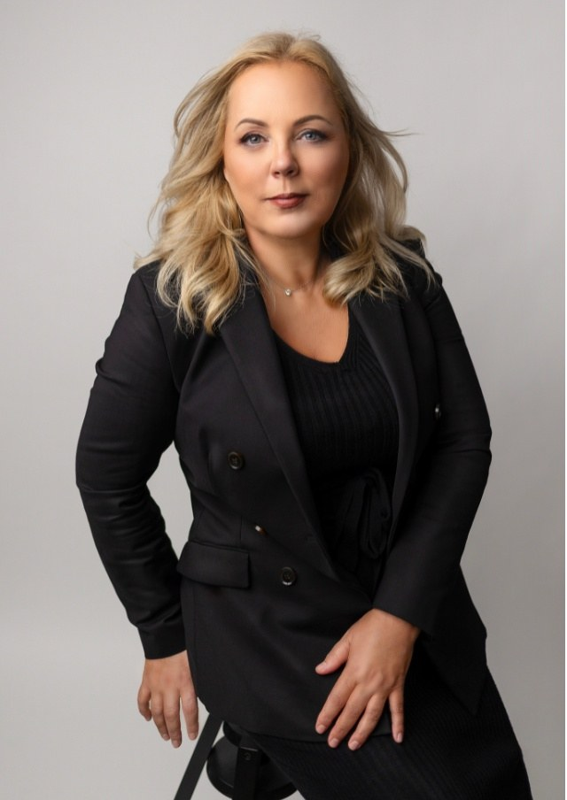

Családjogi ügyvéd • Békéscsaba
Biztonság a jogban. Támasz a nehéz döntésekben.
Családjogi kérdésekben, válás, gyermekekkel kapcsolatos ügyek és vagyonjogi döntések során személyre szabott jogi segítséget nyújtok.

- Válás
- Szülői felügyelet
- Kapcsolattartás
- Gyermektartásdíj
- Vagyonmegosztás
- Ingatlan
- Öröklés
Bemutatkozás
A jogi képviselet számomra hivatás.
Egy válás, egy gyermekkel kapcsolatos vita vagy egy öröklési ügy soha nem csak jogi kérdés. Ilyenkor az ember bizonytalan, sokszor fáradt, és jólesik, ha van mellette valaki, aki nyugodtan, érthetően elmondja, mire számíthat.
Mielőtt ügyvéd lettem, a gyámhivatalban családjogi ügyekkel foglalkoztam. Ott láttam közelről, mennyit számít, ha a szülők meg tudnak egyezni – és hogy ha nem, a gyerekek érdekének akkor is az első helyen kell állnia.
Az ügyvédi munkát nem üzletnek tekintem. Az ügyével személyesen foglalkozom, és arra törekszem, hogy minden lépésnél tudja, hol tartunk és miért.
ügyvéd
Szakterületek
Miben tudok segíteni?
Munkám nagy része családjogi ügy. Emellett ingatlan- és öröklési kérdésekben is vállalok megbízást. A kártyákra kattintva részletesebben is olvashat róluk.
Családjog · kiemelt terület
Polgári jog
Családjog
Amikor egy döntés az egész család jövőjét érinti.
Nem kell mindent előre tudnia, és nem kell egyedül kitalálnia, mi a helyes lépés. Elég, ha elmondja, mi történt – a többit együtt gondoljuk végig, a gyerekek érdekeit szem előtt tartva.
Az itt olvasható összefoglalók általános tájékoztatást adnak. Az Ön helyzetére szabott választ a konzultáción kaphatja meg.
Válás előtti jogi felkészülés
A legtöbb nehézség abból adódik, hogy a fontos kérdések – hol lakjanak a gyerekek, mi legyen a lakással, ki fizeti a hitelt – csak menet közben kerülnek elő. Ha ezeket előre átbeszéljük, a döntéseit nyugodtabban hozhatja meg.
Érdemes előkészíteni
- a házassági anyakönyvi kivonatot és a gyermekek adatait,
- a közös és a külön vagyon vázlatos listáját,
- a hiteleket, tartozásokat és a jövedelmi adatokat.
A gyermekek érdekei
A gyerekekkel kapcsolatos döntéseknél mindig az ő érdekük az irányadó. A gyakorlatban ez sokszor nagyon hétköznapi kérdéseken múlik: melyik iskolába járnak, ki viszi őket edzésre, hol érzik otthon magukat.
Amit érdemes végiggondolni
- a gyermek megszokott napi rendjét,
- a lakóhely, az iskola és a barátok szerepét,
- mindkét szülővel való kapcsolat megőrzését.
Szülői felügyelet
A szülői felügyelet arról szól, ki dönt a gyermek sorsát érintő lényeges kérdésekben – például az iskolaválasztásról, a lakóhelyről vagy az egészségügyi ellátásról. Ez a szülők megállapodásával vagy bírósági döntéssel rendezhető.
Gyakori kérdések
- közös vagy egyik szülőt megillető felügyelet,
- a gyermek lakóhelyének meghatározása,
- a korábbi megállapodás módosítása.
Kapcsolattartás rendezése
A jól átgondolt kapcsolattartási rend sok későbbi vitától kímél meg. Minél konkrétabb – hétvégék, ünnepek, szünidő, átadás helye és ideje –, annál kevesebb a félreértés.
Amit rendezni érdemes
- a hétközi és hétvégi rendet,
- az ünnepeket és az iskolai szüneteket,
- mi történik, ha egy alkalom elmarad.
Vagyonmegosztás
A házasság vagy az élettársi kapcsolat alatt szerzett vagyon megosztásánál nemcsak a lakás és az autó számít, hanem a megtakarítások, a hitelek és a különvagyon is. Az átlátható lista az első lépés.
Amit érdemes tisztázni
- mi számít közös és mi különvagyonnak,
- a közös hitelek sorsát,
- ki marad a lakásban, és milyen feltételekkel.
A megállapodás lehetőségei
Ha mindkét fél nyitott rá, a megállapodás általában gyorsabb és kíméletesebb, mint egy hosszú per – és a gyerekeknek is kevesebb feszültséggel jár. Ha ez nem lehetséges, a bíróság előtt képviselem az érdekeit.
Lehetséges utak
- közös megegyezés és egyezségi megállapodás,
- közvetítői (mediációs) eljárás,
- bírósági eljárás, ha a megegyezés nem sikerül.
A konzultáció menete
Hogyan zajlik a konzultáció?
Az első találkozás célja, hogy tisztán lássa a helyzetét és a lehetőségeit. Utána Ön dönti el, hogyan szeretne továbblépni.
Időpontot kérek-
1
Kapcsolatfelvétel
Hívjon fel vagy írjon e-mailt. Elég néhány mondatban jelezni, milyen ügyben keres – a részleteket személyesen beszéljük meg.
-
2
A konzultáció egyeztetése
Közösen kiválasztunk egy időpontot. Jelzem, milyen iratokat érdemes magával hoznia, hogy a találkozó minél hasznosabb legyen.
-
3
A helyzet és a lehetőségek áttekintése
Meghallgatom, átnézzük a dokumentumokat, és érthetően elmondom, milyen jogi lehetőségek állnak Ön előtt, és melyiknek mi lehet a következménye.
-
4
A következő lépések meghatározása
Ha szeretné, hogy képviseljem, megbeszéljük a teendőket és a költségeket. Hogy egy ügy végül hogyan alakul, az mindig a konkrét körülményeken múlik – ezt őszintén megmondom.
Tudástár
Kérdések, amelyek gyakran felmerülnek
Rövid, közérthető írások a leggyakoribb családjogi kérdésekről. A cikkeket megjelenés előtt Dr. Szedoglavits Réka írja meg és hagyja jóvá.
Konzultáció
Beszéljük meg, mi történt.
A legegyszerűbb, ha felhív vagy ír egy rövid e-mailt. Egyeztetünk egy időpontot, és a találkozón nyugodtan, részletesen átbeszéljük a helyzetét.
Köszönöm, hogy írt.
Ez egy látványterv, ezért az űrlap most nem továbbított semmit. Az éles oldalon itt jelenne meg a visszaigazolás – az időpontot ezután telefonon vagy e-mailben egyeztetnénk.
Kapcsolat
Az iroda Békéscsaba belvárosában
Dr. Szedoglavits Réka ügyvéd 5600 Békéscsaba, Kinizsi utca 4–6., II/26.Csaba Office Irodaház, II. emelet
- Telefon+36 70 678 6718
- E-maildr.szedoglavitsreka@gmail.com
- FogadásElőzetesen egyeztetett időpontban